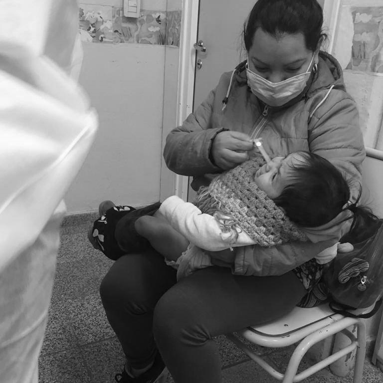
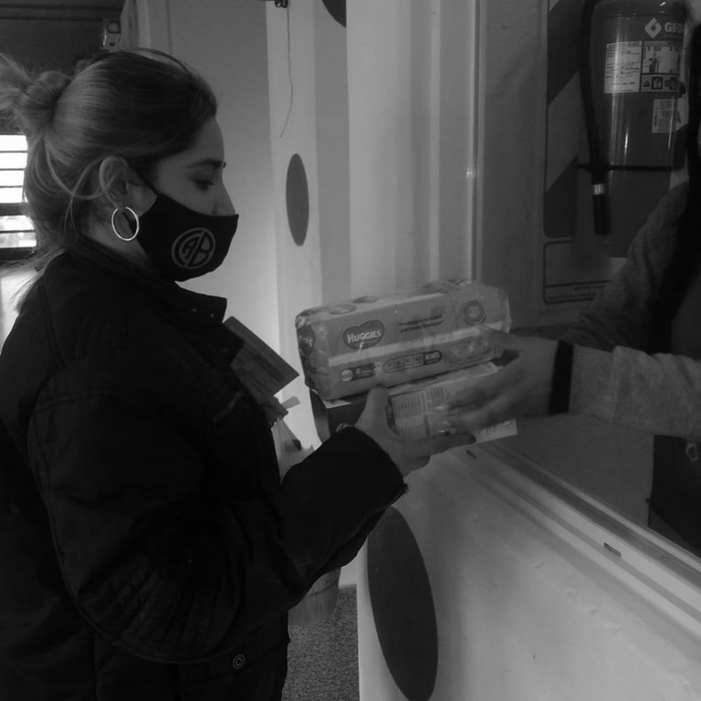
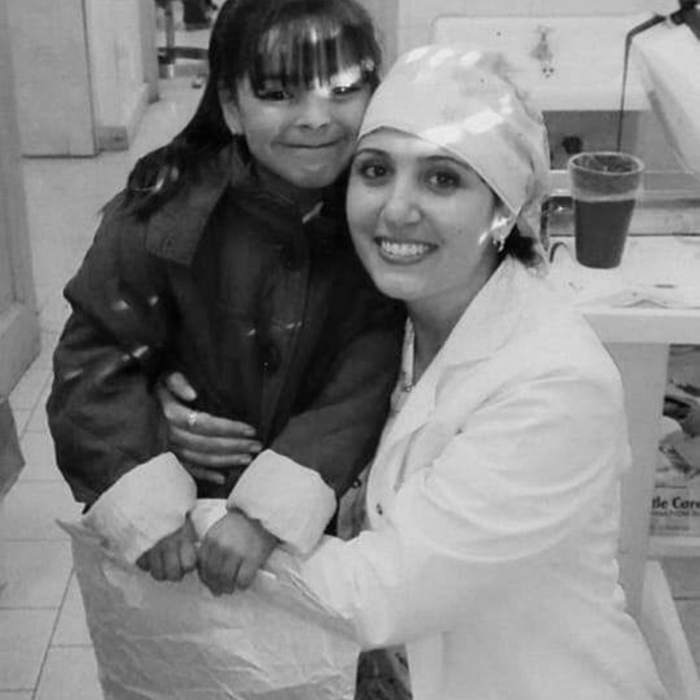

Realizamos acciones de cuidados integrales tales como prevención y promoción de la salud para un desarrollo saludable e integral de las personas. Facilitamos el acceso a la salud brindando asistencia a lxs niñxs y familias que forman parte de los distintos proyectos de la Fundación, por medio de circuitos integrados de vacunación, controles ginecológicos, mamarios, odontológico, entre otros. En el año 2020 brindamos contención a 60 familias. Colocamos más de 200 dosis de vacunas en conjunto con el Ministerio de Salud de la Provincia de Córdoba.
  